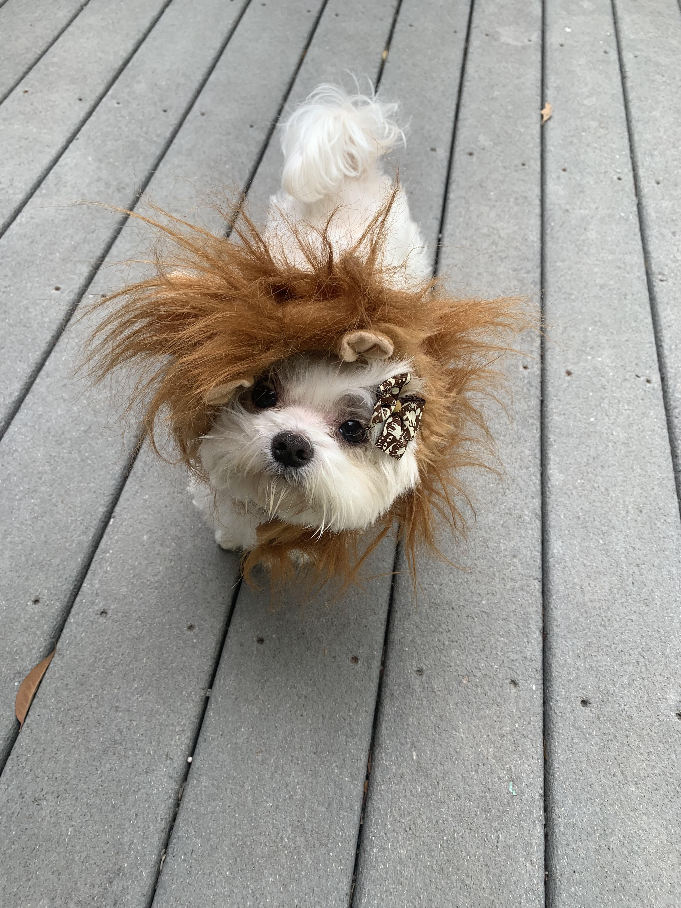

The Lioness is easily the most feared Floof around the globe. Her razor sharp teeth along side her piercing claws give way to a whole new meaning of savage. During her down time, a Floof takes part in saving those who are being poached in the safari's of Africa. In her time, she has successfully reduced the poaching percentage by 100% due to her all-time ravening ferociousness! Nowadays, nobody dares test her. Below is an image captured by an enemy, right before she went for the jugular.

Back to Top